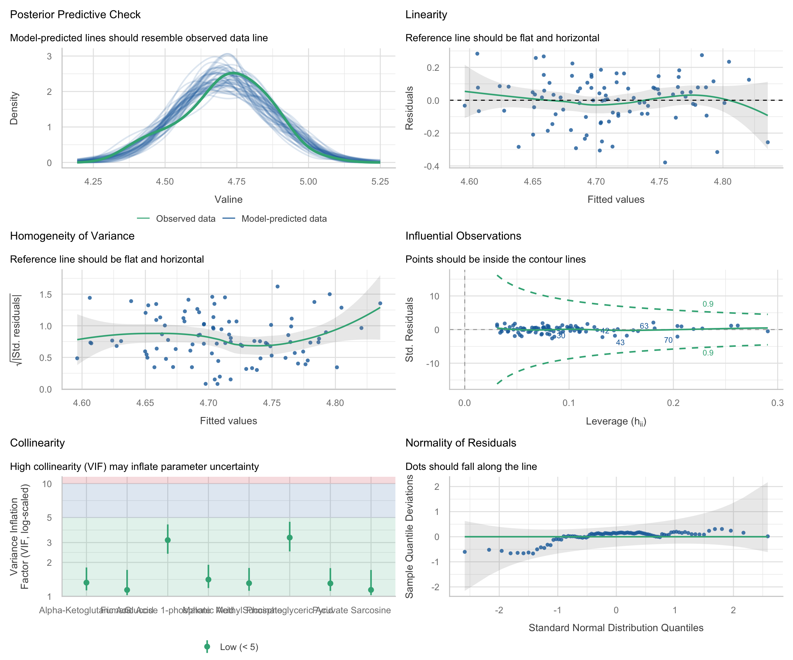
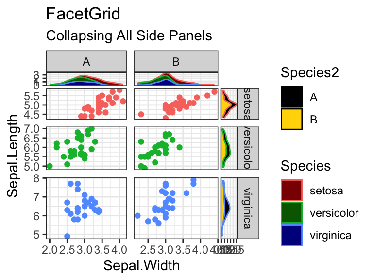
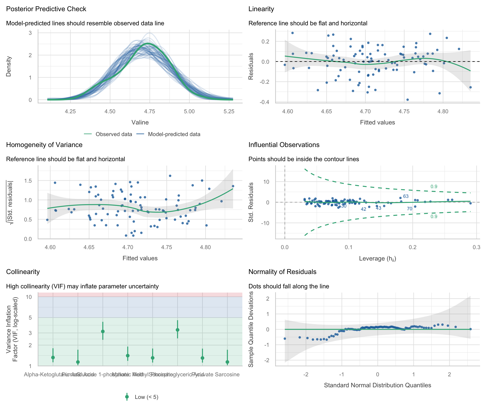
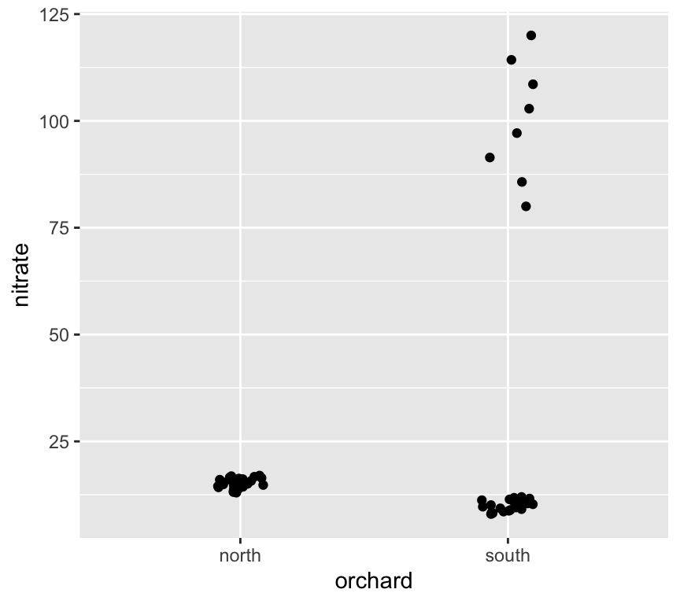
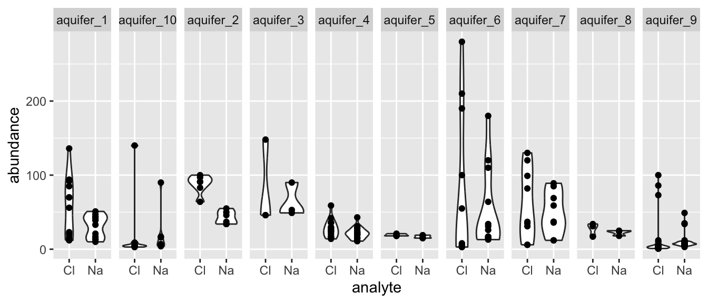
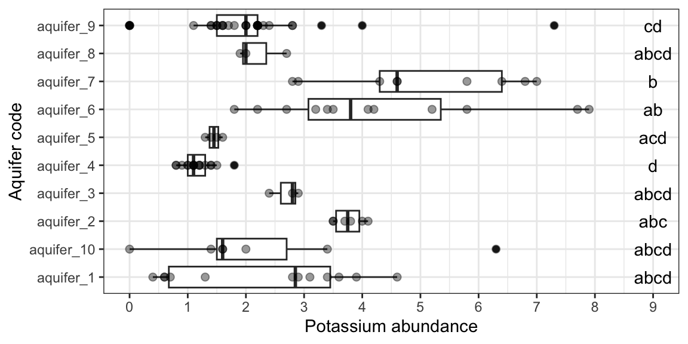
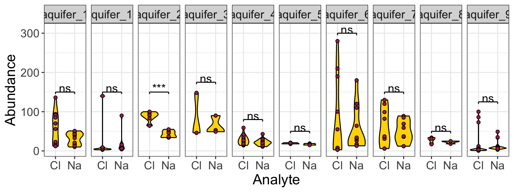

comparing means

“Are these two things the same?”
Often, we want to know if our study subjects contain different amounts of certain analytes. For example, “Does this lake over here contain more potassium than that lake over there?” For this, we need statistical tests. Here, we will have a look at comparing mean values for analyte abundance in situations with two samples and in situations with more than two samples.
I find many of the concepts discussed in this chapter easier to think about with an example in mind. For that, suppose we are analytical chemists on Hawaii, studying the chemistry of the island’s aquifers with the data set hawaii_aquifers in hand. The output below shows the structure of the data set - we have 990 measurements of a 9 different analytes in multiple wells that draw on a set of 10 aquifers.
hawaii_aquifers
## # A tibble: 954 × 6
## aquifer_code well_name longitude latitude analyte
## <chr> <chr> <dbl> <dbl> <chr>
## 1 aquifer_1 Alewa_Heights_Sp… NA NA SiO2
## 2 aquifer_1 Alewa_Heights_Sp… NA NA Cl
## 3 aquifer_1 Alewa_Heights_Sp… NA NA Mg
## 4 aquifer_1 Alewa_Heights_Sp… NA NA Na
## 5 aquifer_1 Alewa_Heights_Sp… NA NA K
## 6 aquifer_1 Alewa_Heights_Sp… NA NA SO4
## 7 aquifer_1 Alewa_Heights_Sp… NA NA HCO3
## 8 aquifer_1 Alewa_Heights_Sp… NA NA dissol…
## 9 aquifer_1 Alewa_Heights_Sp… NA NA Ca
## 10 aquifer_1 Beretania_High_S… NA NA SiO2
## # ℹ 944 more rows
## # ℹ 1 more variable: abundance <dbl>
unique(hawaii_aquifers$aquifer_code)
## [1] "aquifer_1" "aquifer_2" "aquifer_3" "aquifer_4"
## [5] "aquifer_5" "aquifer_6" "aquifer_7" "aquifer_8"
## [9] "aquifer_9" "aquifer_10"Importantly, there are many wells that draw on each aquifer, as shown in the graph below.
hawaii_aquifers %>%
select(aquifer_code, well_name) %>%
group_by(aquifer_code) %>%
summarize(n_wells = length(unique(well_name))) -> aquifers_summarized
aquifers_summarized
## # A tibble: 10 × 2
## aquifer_code n_wells
## <chr> <int>
## 1 aquifer_1 12
## 2 aquifer_10 7
## 3 aquifer_2 5
## 4 aquifer_3 3
## 5 aquifer_4 16
## 6 aquifer_5 4
## 7 aquifer_6 12
## 8 aquifer_7 9
## 9 aquifer_8 3
## 10 aquifer_9 30
ggplot(aquifers_summarized) + geom_col(aes(x = n_wells, y = aquifer_code))
definitions
populations and independent measurements: When we are comparing means, we are comparing two sets of values. It is important to consider where these values came from in the first place. In particular, it is usually useful to think of these values as representatives of larger populations. In the example of our aquifer data set, we can think of the measurements from different wells drawing on the same aquifer as independent measurements of the “population” (i.e. the aquifer).
the null hypothesis: When we conduct a statistical test, we are testing the null hypothesis. The null (think “default”) hypothesis is that there is no difference bewteen the means (hence the name “null”). In the example of our aquifers, let’s say that we’re interested in whether two aquifers have different abundances of potassium - in this case the null hypothesis is that they do not differ, in other words, that they have the same amount of potassium.
the p value: The p value represents the probability of getting data as extreme as our results if the null hypothesis is true. In other words - the p value is the probability that we would observe the differences we did, if in fact there were no differences in the means at all. To continue with our example: suppose we measure potassium levels in 10% of the wells that access each aquifer and find that aquifer_1 has potassium levels of 14 +/- 2 and aquifer_2 has potassium levels of 12 +/- 1. Suppose that we then conduct a statistical test and get a p value of 0.04. This means that, assuming the aquifers have the same magneisum levels (i.e. assuming the null hypothesis is true), there is a 4% chance that we would get the measured values that we did. In other words, IF the aquifers have the same potassium abundance, it is pretty unlikely that we would have obtained the measurements that we did.
Please note that the the p value is not the probability of a detected difference being a false positive. The probability of a false positive requires additional information in order to be calculated. For further discussion please see the end of this chapter.
looking at the distribution first
Before comparing two means, look at the two distributions. This is not a formality. Every test in this chapter makes assumptions about the shape of the data — whether it is roughly normal, whether the groups have comparable spread — and a mean on its own reveals nothing about either. Two groups can have identical means and completely different distributions, and a bar chart of the means will hide that perfectly.
So it is worth knowing how to draw a distribution in full rather than summarizing it away.
distributions in full
Combining geoms shows the summary, the density and the raw observations at once. The half-eye gives the density, the boxplot the quartiles, and the dots every actual measurement — showing the shape, the spread and the sample size in one picture:
mpg %>% filter(cyl %in% c(4,6,8)) %>%
ggplot(aes(x = factor(cyl), y = hwy, fill = factor(cyl))) +
ggdist::stat_halfeye(
adjust = 0.5, justification = -0.2, .width = 0, point_colour = NA
) +
geom_boxplot(width = 0.12, outlier.color = NA, alpha = 0.5) +
ggdist::stat_dots(side = "left", justification = 1.1, binwidth = .25)
Look at what this shows that a bar chart would not: how many observations there actually are, whether the distribution is skewed, and whether any group is bimodal. All three change which test to reach for in the next section.
distributions alongside a scatter plot
With two variables in play at once, the distribution of each can be attached to the margins of the plot, so the relationship and the two individual distributions are visible together:
i2 <- iris %>%
mutate(Species2 = rep(c("A","B"), 75))
p <- ggplot(i2, aes(Sepal.Width, Sepal.Length, color = Species)) +
geom_point()
p + geom_xsidedensity(aes(y=after_stat(density), xfill = Species), position = "stack")+
geom_ysidedensity(aes(x=after_stat(density), yfill = Species2), position = "stack") +
theme_bw() +
facet_grid(Species~Species2, space = "free", scales = "free") +
labs(title = "FacetGrid", subtitle = "Collapsing All Side Panels") +
ggside(collapse = "all") +
scale_xfill_manual(values = c("darkred","darkgreen","darkblue")) +
scale_yfill_manual(values = c("black","gold"))
test selection
There are many different types of statistical tests. Below is a flow chart illustrating how it is recommended that statistical tests be used in this course. There are three regimes of tests: variance and normality tests (blue), parametric tests (green), and non-parametric tests (orange):

When we are comparing means, we need to first determine what kind of statistical tests we can use with our data. If our data can be reasonably modeled by a normal distribution, then we can use “parametric” tests. Under those conditions they are the most powerful choice, meaning they can detect smaller differences as statistically significant. If they cannot, the p-values from parametric tests may no longer be accurate, especially with small samples, so we switch to “non-parametric” tests, whose p-values hold up whatever the shape of the data. Non-parametric tests are not simply weaker versions of the parametric ones: with skewed data or a few outliers, they are often the more powerful choice as well.
A helpful way to think about the non-parametric tests in this chapter is that each one ranks all of the values, then does something close to its parametric partner on those ranks. The Wilcox test behaves much like a t-test run on ranks, and the Dunn test (for more than two groups) much like a set of pairwise comparisons run on ranks. This is an approximation rather than exactly what the software computes, but it explains why these tests do not need normally distributed data: ranks always run from 1 to N, whatever the measurements looked like, so a skewed distribution or an extreme value cannot distort them.
We can check our data for normality using the Shapiro test. Let’s use the hawaii_aquifers data as an example, and let’s consider only the element potassium:
K_data <- hawaii_aquifers %>%
filter(analyte == "K")
K_data
## # A tibble: 106 × 6
## aquifer_code well_name longitude latitude analyte
## <chr> <chr> <dbl> <dbl> <chr>
## 1 aquifer_1 Alewa_Heights_Sp… NA NA K
## 2 aquifer_1 Beretania_High_S… NA NA K
## 3 aquifer_1 Beretania_Low_Se… NA NA K
## 4 aquifer_1 Kuliouou_Well -158. 21.3 K
## 5 aquifer_1 Manoa_Well_II -158. 21.3 K
## 6 aquifer_1 Moanalua_Wells_P… -158. 21.4 K
## 7 aquifer_1 Moanalua_Wells_P… -158. 21.4 K
## 8 aquifer_1 Moanalua_Wells_P… -158. 21.4 K
## 9 aquifer_1 Nuuanu_Aerator_W… -158. 21.4 K
## 10 aquifer_1 Palolo_Tunnel -158. 21.3 K
## # ℹ 96 more rows
## # ℹ 1 more variable: abundance <dbl>To work with two means, let’s just look at aquifers 1 and 6:
K_data_1_6 <- K_data %>%
filter(aquifer_code %in% c("aquifer_1", "aquifer_6"))
K_data_1_6
## # A tibble: 24 × 6
## aquifer_code well_name longitude latitude analyte
## <chr> <chr> <dbl> <dbl> <chr>
## 1 aquifer_1 Alewa_Heights_Sp… NA NA K
## 2 aquifer_1 Beretania_High_S… NA NA K
## 3 aquifer_1 Beretania_Low_Se… NA NA K
## 4 aquifer_1 Kuliouou_Well -158. 21.3 K
## 5 aquifer_1 Manoa_Well_II -158. 21.3 K
## 6 aquifer_1 Moanalua_Wells_P… -158. 21.4 K
## 7 aquifer_1 Moanalua_Wells_P… -158. 21.4 K
## 8 aquifer_1 Moanalua_Wells_P… -158. 21.4 K
## 9 aquifer_1 Nuuanu_Aerator_W… -158. 21.4 K
## 10 aquifer_1 Palolo_Tunnel -158. 21.3 K
## # ℹ 14 more rows
## # ℹ 1 more variable: abundance <dbl>
ggplot(K_data_1_6, aes(x = aquifer_code, y = abundance)) +
geom_boxplot() +
geom_point()
Are these data normally distributed? Let’s get a first approximation by looking at a plot:
K_data_1_6 %>%
ggplot(aes(x = abundance)) +
geom_histogram(bins = 30) +
facet_wrap(~aquifer_code) +
geom_density(aes(y = ..density..*10), color = "blue")
Based on this graphic, it’s hard to say! Let’s use a statistical test to help. When we want to run the Shaprio test, we are looking to see if each group has normally distributed here (here group is “aquifer_code”, i.e. aquifer_1 and aquifer_6). This means we need to group_by(aquifer_code) before we run the test:
K_data_1_6 %>%
group_by(aquifer_code) %>%
shapiroTest(abundance)
## # A tibble: 2 × 4
## aquifer_code variable statistic p
## <chr> <chr> <dbl> <dbl>
## 1 aquifer_1 values 0.885 0.102
## 2 aquifer_6 values 0.914 0.239Both p-values are above 0.05! This means that the distributions are not significantly different from a normal distribution. What about the spread of the two groups? The t-test used in this course is Welch’s t-test, which does not assume the two groups have equal variances, so for two groups there is no need to test the variances before choosing a test. (Student’s t-test, the older version, does assume equal variances. It is barely more powerful when that assumption holds and can give badly misleading p-values when it does not, which is why Welch’s version is the default.)
two means
Now, since our data passed the Shapiro test, we can use a t-test. A t-test is a parametric test. This means that it relies on modeling the data using a normal distribution in order to make comparisons. When its assumptions hold, it is also the most powerful test available, meaning it is the most likely to detect a difference in means, assuming one is present. Let’s try it out:
K_data_1_6 %>%
tTest(abundance ~ aquifer_code)
## # A tibble: 1 × 8
## .y. group1 group2 n1 n2 statistic df p
## * <chr> <chr> <chr> <int> <int> <dbl> <dbl> <dbl>
## 1 abundance aquif… aquif… 12 12 -2.75 20.5 0.0121A p-value of 0.012! This is below 0.05, meaning that if the two aquifers truly had the same mean, we would only observe a difference at least this extreme about 1.2% of the time. That gives us fairly strong evidence that the means differ. Suppose that our data had not passed the Shapiro test. We would then need to use a Wilcox test. The Wilcox test is a non-parametric test, which means that it does not use a normal distribution to model the data in order to make comparisons. When the data really are normal, this makes it a less powerful test than the t-test, meaning it is less likely to detect a difference between the groups, assuming there is one. For fun, let’s try that one out and compare the p-values from the two methods:
K_data_1_6 %>%
wilcoxTest(abundance ~ aquifer_code)
## # A tibble: 1 × 7
## .y. group1 group2 n1 n2 statistic p
## * <chr> <chr> <chr> <int> <int> <dbl> <dbl>
## 1 abundance aquifer_1 aquifer_6 12 12 33.5 0.0252A p-value of 0.028! This is higher than the value given by the t-test (0.012), because the Wilcox test works with less information. Instead of using the measured values, it pools both groups, ranks every observation from smallest to largest, and asks whether one group’s ranks sit consistently higher than the other’s. Its null hypothesis is that both groups come from the same distribution, so that a value drawn from one group is equally likely to be larger or smaller than a value drawn from the other. Interpreting the number as before, if the two aquifers really had identical distributions, we would see results this extreme only about 2.8% of the time.
what the Wilcox test compares
Strictly speaking, the Wilcox test compares neither means nor medians. It asks whether values from one group tend to be larger than values from the other. If the two distributions have the same shape and differ only by a shift, that question is the same as asking whether their medians differ, which is why the median is the usual summary to report with a Wilcox result. When the shapes clearly differ, report the medians as a description, but phrase the conclusion as “values in group A tend to be higher than values in group B.”
Because it works on ranks, the Wilcox test is barely moved by a few extreme values. A reading ten times larger than the rest still counts only as the top rank, whereas the same reading can drag a mean a long way. For this reason the Wilcox test is less powerful than the t-test when the data truly are normal, but often more powerful when a few outliers are present. It also means the two tests can disagree, and occasionally point in opposite directions. Consider nitrate measured in 30 soil samples from each of two orchards. Every north sample sits between 13 and 17 mg/kg. Most south samples are lower, between 8 and 12, but eight of them come from beds near a manure store and read between 80 and 120:
orchards <- tibble(
orchard = rep(c("north", "south"), each = 30),
nitrate = c(seq(13, 17, length.out = 30),
seq(8, 12, length.out = 22), seq(80, 120, length.out = 8))
)
ggplot(orchards, aes(x = orchard, y = nitrate)) +
geom_jitter(width = 0.1, height = 0)
Figure: Nitrate in soil samples from two orchards. Strip plot of nitrate concentration (mg/kg, y axis) for the north and south orchards (x axis); each point is one soil sample. Most south samples sit below every north sample, but eight very high south readings pull the south mean above the north mean. Data are a constructed teaching example.
orchards %>%
group_by(orchard) %>%
summarize(mean = mean(nitrate), median = median(nitrate))
## # A tibble: 2 × 3
## orchard mean median
## <chr> <dbl> <dbl>
## 1 north 15 15
## 2 south 34 10.8The south orchard has the higher mean (34 vs 15) but the lower median (10.8 vs 15). Now both tests:
orchards %>%
tTest(nitrate ~ orchard)
## # A tibble: 1 × 8
## .y. group1 group2 n1 n2 statistic df p
## * <chr> <chr> <chr> <int> <int> <dbl> <dbl> <dbl>
## 1 nitrate north south 30 30 -2.53 29.1 0.017
orchards %>%
wilcoxTest(nitrate ~ orchard)
## # A tibble: 1 × 7
## .y. group1 group2 n1 n2 statistic p
## * <chr> <chr> <chr> <int> <int> <dbl> <dbl>
## 1 nitrate north south 30 30 660 0.00161Both p-values are below 0.05, and the two results point in opposite directions. The t-test says the south orchard has significantly more nitrate on average, because eight very high readings raise its mean. The Wilcox test says north samples tend to be higher, because 22 of the 30 south samples sit below every north sample. Neither test is wrong. They are answering different questions, and a plot of the raw points shows which question matters for the data at hand: here, whether the concern is the total nitrate load (the mean) or the condition of a typical bed (the ranks).
more than two means
In the previous section we compared two means. What if we want to compare means from more than two study subjects? The first step is again to determine which tests to use. Let’s consider our hawaii aquifer data again, though this time let’s use all the aquifers, not just two:
K_data <- hawaii_aquifers %>%
filter(analyte == "K")
K_data
## # A tibble: 106 × 6
## aquifer_code well_name longitude latitude analyte
## <chr> <chr> <dbl> <dbl> <chr>
## 1 aquifer_1 Alewa_Heights_Sp… NA NA K
## 2 aquifer_1 Beretania_High_S… NA NA K
## 3 aquifer_1 Beretania_Low_Se… NA NA K
## 4 aquifer_1 Kuliouou_Well -158. 21.3 K
## 5 aquifer_1 Manoa_Well_II -158. 21.3 K
## 6 aquifer_1 Moanalua_Wells_P… -158. 21.4 K
## 7 aquifer_1 Moanalua_Wells_P… -158. 21.4 K
## 8 aquifer_1 Moanalua_Wells_P… -158. 21.4 K
## 9 aquifer_1 Nuuanu_Aerator_W… -158. 21.4 K
## 10 aquifer_1 Palolo_Tunnel -158. 21.3 K
## # ℹ 96 more rows
## # ℹ 1 more variable: abundance <dbl>
ggplot(data = K_data, aes(y = aquifer_code, x = abundance)) +
geom_boxplot() +
geom_point(color = "maroon", alpha = 0.6, size = 3)
Let’s check visually to see if each group is normally distributed and to see if they have roughly equal variance:
K_data %>%
group_by(aquifer_code) %>%
ggplot(aes(x = abundance)) +
geom_histogram(bins = 30) +
facet_wrap(~aquifer_code) +
geom_density(aes(y = ..density..*10), colour = "blue")
Again, it is somewhat hard to tell visually if these data are normally distributed, so let’s check with the Shapiro test. With more than two groups there is a second thing to look at: the Tukey test used below compares every pair using one shared estimate of the spread, so it assumes the groups have roughly similar variances. The Levene test checks that. Don’t forget: with the Shapiro test, we are looking within each group and so need to group_by(), with the Levene test, we are looking across groups, and so need to provide a y~x formula:
K_data %>%
group_by(aquifer_code) %>%
shapiroTest(abundance)
## # A tibble: 10 × 4
## aquifer_code variable statistic p
## <chr> <chr> <dbl> <dbl>
## 1 aquifer_1 values 0.885 0.102
## 2 aquifer_10 values 0.864 0.163
## 3 aquifer_2 values 0.913 0.459
## 4 aquifer_3 values 0.893 0.363
## 5 aquifer_4 values 0.948 0.421
## 6 aquifer_5 values 0.993 0.972
## 7 aquifer_6 values 0.914 0.239
## 8 aquifer_7 values 0.915 0.355
## 9 aquifer_8 values 0.842 0.220
## 10 aquifer_9 values 0.790 0.0000214
K_data %>%
leveneTest(abundance ~ aquifer_code)
## # A tibble: 1 × 4
## df1 df2 statistic p
## <int> <int> <dbl> <dbl>
## 1 9 96 2.95 0.00387Based on these tests, it looks like the data for aquifer 9 is significantly different from a normal distribution (Shapiro test p < 0.05), and the variances are certainly different from one another (Levene test p < 0.05).
With more than two groups, running a separate t-test on every pair would multiply the chances of a false positive. Ten aquifers make 45 pairs, and at a 0.05 threshold about two of those 45 would come out significant by chance alone even if no aquifer differed from any other. The tests below compare every pair at once and correct the p-values for the number of comparisons made. (An ANOVA is often run first, to ask whether any group differs at all. It is not needed before the Tukey test, which makes its own correction. ANOVA answers other questions too, such as how two factors combine, and it has a chapter of its own.)
Tukey test
Let’s assume for a second that our data passed these tests. This means that we could reasonably model our data with normal distributions and use a parametric test. For that we use Tukey’s Honest Significant Difference test (implemented using tukeyTest). This will essentially run a t-test on all the pairs of study subjects that we can derive from our data set (in this example, aquifer_1 vs. aquifer_2, aquifer_1 vs. aquifer_3, etc.). After that, it will correct the p-values according to the number of comparisons that it performed. This controls the rate of type I error that we can expect from the test. These corrected values are provided to us in the p.adj column.
K_data %>%
tukeyTest(abundance ~ aquifer_code)
## # A tibble: 45 × 9
## term group1 group2 null.value estimate conf.low
## * <chr> <chr> <chr> <dbl> <dbl> <dbl>
## 1 aquifer_code aquifer… aquif… 0 0.00357 -2.04
## 2 aquifer_code aquifer… aquif… 0 1.44 -0.708
## 3 aquifer_code aquifer… aquif… 0 0.375 -2.40
## 4 aquifer_code aquifer… aquif… 0 -1.15 -2.78
## 5 aquifer_code aquifer… aquif… 0 -0.875 -3.36
## 6 aquifer_code aquifer… aquif… 0 1.98 0.228
## 7 aquifer_code aquifer… aquif… 0 2.70 0.801
## 8 aquifer_code aquifer… aquif… 0 -0.125 -2.90
## 9 aquifer_code aquifer… aquif… 0 -0.349 -1.80
## 10 aquifer_code aquifer… aquif… 0 1.44 -0.954
## # ℹ 35 more rows
## # ℹ 3 more variables: conf.high <dbl>, p.adj <dbl>,
## # p.adj.signif <chr>Using the output from our tukey test, we can determine which means are similar. We can do this using the pGroups function:
groups_based_on_tukey <- K_data %>%
tukeyTest(abundance ~ aquifer_code) %>%
pGroups()
groups_based_on_tukey
## treatment group spaced_group
## aquifer_1 aquifer_1 ab ab
## aquifer_10 aquifer_10 abc abc
## aquifer_2 aquifer_2 acd a cd
## aquifer_3 aquifer_3 abcd abcd
## aquifer_4 aquifer_4 b b
## aquifer_5 aquifer_5 ab ab
## aquifer_6 aquifer_6 cd cd
## aquifer_7 aquifer_7 d d
## aquifer_8 aquifer_8 abcd abcd
## aquifer_9 aquifer_9 ab abWe can use the output from pGroups to annotate our plot:
ggplot(data = K_data, aes(y = aquifer_code, x = abundance)) +
geom_boxplot() +
geom_point(color = "maroon", alpha = 0.6, size = 3) +
geom_text(data = groups_based_on_tukey, aes(y = treatment, x = 9, label = group))
Excellent! This plot shows us, using the letters on the same line with each aquifer, which means are the same and which are different. If a letter is shared among the labels in line with two aquifers, it means that their means do not differ significantly. For example, aquifer 2 and aquifer 6 both have “b” in their labels, so their means are not different - and are the same as those of aquifers 3 and 10.
Dunn test
The above Tukey example is great, but remember - our data did not pass the Shapiro or Levene tests, so the Tukey test’s p-values may not be accurate here, and a rank test is the more trustworthy choice. The rank-based counterpart of the Tukey test is the Dunn test. It pools every value from every group, ranks them all together, compares each pair’s average rank within that single ranking, and then corrects the p-values for the number of comparisons. Everything said above about what the Wilcox test compares applies here too. Because the ranking is shared, the Dunn test and a pairwise Wilcox test can give slightly different answers for the same pair: with the Dunn test, a pair’s ranks depend on which other groups are in the pool. (That shared ranking is the one the Kruskal test uses. The Kruskal test is the rank-based cousin of the ANOVA, and it appears in the ANOVA chapter.) Let’s try:
K_data %>%
dunnTest(abundance ~ aquifer_code)
## # A tibble: 45 × 9
## .y. group1 group2 n1 n2 statistic p p.adj
## * <chr> <chr> <chr> <int> <int> <dbl> <dbl> <dbl>
## 1 abunda… aquif… aquif… 12 7 -0.194 0.846 1
## 2 abunda… aquif… aquif… 12 6 2.24 0.0254 0.736
## 3 abunda… aquif… aquif… 12 3 0.866 0.387 1
## 4 abunda… aquif… aquif… 12 17 -2.65 0.00806 0.266
## 5 abunda… aquif… aquif… 12 4 -1.12 0.263 1
## 6 abunda… aquif… aquif… 12 12 2.51 0.0121 0.388
## 7 abunda… aquif… aquif… 12 9 3.01 0.00257 0.100
## 8 abunda… aquif… aquif… 12 3 0.143 0.886 1
## 9 abunda… aquif… aquif… 12 33 -0.470 0.639 1
## 10 abunda… aquif… aquif… 7 6 2.17 0.0296 0.830
## # ℹ 35 more rows
## # ℹ 1 more variable: p.adj.signif <chr>This gives us adjusted p-values for all pairwise comparisons. Once again, we can use pGroups() to give us a compact letter display for each group, which can then be used to annotate the plot:
groups_based_on_dunn <- K_data %>%
dunnTest(abundance ~ aquifer_code) %>%
pGroups()
groups_based_on_dunn
## treatment group spaced_group
## aquifer_1 aquifer_1 abcd abcd
## aquifer_10 aquifer_10 abcd abcd
## aquifer_2 aquifer_2 abc abc
## aquifer_3 aquifer_3 abcd abcd
## aquifer_4 aquifer_4 d d
## aquifer_5 aquifer_5 acd a cd
## aquifer_6 aquifer_6 ab ab
## aquifer_7 aquifer_7 b b
## aquifer_8 aquifer_8 abcd abcd
## aquifer_9 aquifer_9 cd cd
ggplot(data = K_data, aes(y = aquifer_code, x = abundance)) +
geom_boxplot() +
geom_point(color = "black", alpha = 0.4, size = 2) +
scale_x_continuous(name = "Potassium abundance", breaks = seq(0,10,1)) +
scale_y_discrete(name = "Aquifer code") +
geom_text(data = groups_based_on_dunn, aes(y = treatment, x = 9, label = group)) +
theme_bw()
Note that these groupings are different from those generated by the Tukey test.
pairs of means
Oftentimes we have more than two means to compare, but rather than wanting to compare all means at once, we want to compare them in a pairwise fashion. For example, suppose we want to know if any of the aquifers contain different amounts of Na and Cl. We are not interested in testing for differences among all values of Na and Cl, rather, we want to test all pairs of Na and Cl values arising from each aquifer. That is to say, we want to compare the means in each facet of the plot below:
hawaii_aquifers %>%
filter(analyte %in% c("Na", "Cl")) %>%
ggplot(aes(x = analyte, y = abundance)) + geom_violin() + geom_point() + facet_grid(.~aquifer_code)
Fortunately, we can use an approach that is very similar to the what we’ve learned in the earlier portions of this chapter, just with minor modifications. Let’s have a look! We start with the Shapiro and Levene tests, as usual (note that we group using two variables when using the Shapiro test so that each analyte within each aquifer is considered as an individual distribution):
hawaii_aquifers %>%
filter(analyte %in% c("Na", "Cl")) %>%
group_by(analyte, aquifer_code) %>%
shapiroTest(abundance)
## Note: Found a group with exactly 3 data points where at least two were identical.
## A tiny bit of noise was added to these data points, because the Shapiro–Wilk test
## p-value can be artificially low in such edge cases due to test mechanics.
## Consider carefully whether you want to interpret the results of the test, even with noise added.
## # A tibble: 20 × 5
## analyte aquifer_code variable statistic p
## <chr> <chr> <chr> <dbl> <dbl>
## 1 Cl aquifer_1 values 0.900 1.59e- 1
## 2 Cl aquifer_10 values 0.486 1.09e- 5
## 3 Cl aquifer_2 values 0.869 2.24e- 1
## 4 Cl aquifer_3 values 0.750 2.97e- 6
## 5 Cl aquifer_4 values 0.903 7.49e- 2
## 6 Cl aquifer_5 values 0.849 2.24e- 1
## 7 Cl aquifer_6 values 0.741 2.15e- 3
## 8 Cl aquifer_7 values 0.893 2.12e- 1
## 9 Cl aquifer_8 values 0.878 3.17e- 1
## 10 Cl aquifer_9 values 0.420 2.68e-10
## 11 Na aquifer_1 values 0.886 1.06e- 1
## 12 Na aquifer_10 values 0.593 2.26e- 4
## 13 Na aquifer_2 values 0.884 2.88e- 1
## 14 Na aquifer_3 values 0.822 1.69e- 1
## 15 Na aquifer_4 values 0.933 2.41e- 1
## 16 Na aquifer_5 values 0.827 1.61e- 1
## 17 Na aquifer_6 values 0.764 3.80e- 3
## 18 Na aquifer_7 values 0.915 3.51e- 1
## 19 Na aquifer_8 values 0.855 2.53e- 1
## 20 Na aquifer_9 values 0.531 3.97e- 9Looks like some of those distributions are significantly different from normal! Let’s run the levene test anyway. Note that for this particular case of the Levene test, we are interested in testing whether each pair of distributions has similar variances. For that we need to feed the Levene test data that is grouped by aquifer_code (so that it tests each pair as a group), then we need to specify the y ~ x formula (which in this case is abundance ~ analyte):
hawaii_aquifers %>%
filter(analyte %in% c("Na", "Cl")) %>%
group_by(aquifer_code) %>%
leveneTest(abundance ~ analyte)
## # A tibble: 10 × 5
## aquifer_code df1 df2 statistic p
## <chr> <int> <int> <dbl> <dbl>
## 1 aquifer_1 1 22 10.5 0.00375
## 2 aquifer_10 1 12 0.0535 0.821
## 3 aquifer_2 1 10 0.0243 0.879
## 4 aquifer_3 1 4 0.320 0.602
## 5 aquifer_4 1 32 1.57 0.219
## 6 aquifer_5 1 6 2 0.207
## 7 aquifer_6 1 22 1.03 0.322
## 8 aquifer_7 1 16 1.54 0.232
## 9 aquifer_8 1 4 0.515 0.512
## 10 aquifer_9 1 64 1.10 0.298It looks like the variances of the pair in aquifer 1 have significantly different variances. So - we for sure need to be using non-parametric testing. If this were a simple case of two means we would use wilcoxTest, but we have many pairs, so we will use pairwiseWilcoxTest (note that with this test there are options for various styles of controlling for multiple comparisons, see: ?rstatix::pairwise_wilcox_test):
hawaii_aquifers %>%
filter(analyte %in% c("Na", "Cl")) %>%
group_by(aquifer_code) %>%
pairwiseWilcoxTest(abundance~analyte)
## # A tibble: 10 × 10
## aquifer_code .y. group1 group2 n1 n2 statistic
## * <chr> <chr> <chr> <chr> <int> <int> <dbl>
## 1 aquifer_1 abundan… Cl Na 12 12 99.5
## 2 aquifer_10 abundan… Cl Na 7 7 14
## 3 aquifer_2 abundan… Cl Na 6 6 36
## 4 aquifer_3 abundan… Cl Na 3 3 3
## 5 aquifer_4 abundan… Cl Na 17 17 189
## 6 aquifer_5 abundan… Cl Na 4 4 13
## 7 aquifer_6 abundan… Cl Na 12 12 53
## 8 aquifer_7 abundan… Cl Na 9 9 42
## 9 aquifer_8 abundan… Cl Na 3 3 6
## 10 aquifer_9 abundan… Cl Na 33 33 195
## # ℹ 3 more variables: p <dbl>, p.adj <dbl>,
## # p.adj.signif <chr>Excellent! It looks like there is a statistically significant difference between the means of the abundances of Cl and Na in aquifer_2 and (surprisingly?) in aquifer_9 (perhaps due to the large number of observations?).
What would we have done if our Shaprio and Levene tests had revealed no significant differences? Well, a pairwiseTTest of course!
hawaii_aquifers %>%
filter(analyte %in% c("Na", "Cl")) %>%
group_by(aquifer_code) %>%
pairwiseTTest(abundance~analyte) -> test_output
test_output
## # A tibble: 10 × 10
## aquifer_code .y. group1 group2 n1 n2 p
## * <chr> <chr> <chr> <chr> <int> <int> <dbl>
## 1 aquifer_1 abundance Cl Na 12 12 4.69e-2
## 2 aquifer_10 abundance Cl Na 7 7 8.82e-1
## 3 aquifer_2 abundance Cl Na 6 6 3.75e-5
## 4 aquifer_3 abundance Cl Na 3 3 6.83e-1
## 5 aquifer_4 abundance Cl Na 17 17 1.03e-1
## 6 aquifer_5 abundance Cl Na 4 4 9.75e-2
## 7 aquifer_6 abundance Cl Na 12 12 5.66e-1
## 8 aquifer_7 abundance Cl Na 9 9 5.21e-1
## 9 aquifer_8 abundance Cl Na 3 3 4.28e-1
## 10 aquifer_9 abundance Cl Na 33 33 8.96e-1
## # ℹ 3 more variables: p.signif <chr>, p.adj <dbl>,
## # p.adj.signif <chr>When the data are grouped, as they are here, pairwiseTTest and pairwiseWilcoxTest correct for multiple comparisons across all of the groups at once. Here there is one comparison per aquifer, ten in all, so the p.adj column holds Holm-adjusted p-values for the full set of ten comparisons, while the p column holds the uncorrected values. Read p.adj (and its stars, p.adj.signif) when deciding which differences are significant.
Excellent, now we see how to run parametric and non-parametric pairwise comparisons. How do we annotate plots with the output of these tests? Here is an example:
anno <- data.frame(
xmin = test_output$group1,
xmax = test_output$group2,
y_position = c(150, 150, 150, 175, 80, 50, 300, 150, 50, 125),
text = test_output$p.adj.signif,
text_size = 10,
text_vert_offset = 10,
text_horiz_offset = 1.5,
tip_length_xmin = 5,
tip_length_xmax = 5,
aquifer_code = test_output$aquifer_code,
hjust = 0.5,
vjust = 0.5
)
hawaii_aquifers %>%
filter(analyte %in% c("Na", "Cl")) %>%
ggplot(aes(x = analyte, y = abundance)) +
geom_violin(fill = "gold", color = "black") +
geom_point(shape = 21, fill = "maroon", color = "black") +
facet_grid(.~aquifer_code) +
geomSignif(data = anno, orientation = "horizontal") +
scale_x_discrete(name = "Analyte") +
scale_y_continuous(name = "Abundance") +
theme_bw() +
theme(
text = element_text(size = 16)
)
exercises

further reading
Comparing Multiple Means in R. Datanovia’s step-by-step tutorial shows how to run one-way and repeated-measures ANOVA in R, diagnose assumptions, and follow up with Tukey or pairwise comparisons using tidyverse-friendly code.
Parametric vs. Nonparametric Tests. Jim Frost breaks down when parametric tests are appropriate, the trade-offs of switching to rank-based alternatives, and how violation of assumptions affects power and interpretation.
The p value wars. A short commentary by Ulrich Dirnagl capturing the ongoing debates about redefining statistical significance, the historical context of p < 0.05, and the risks of rigid thresholds versus broader inferential thinking.
Common statistical mistakes in biomedical research. The authors catalog frequent errors such as double dipping, underpowered designs, and misreported effect sizes, pairing each with pragmatic fixes for both authors and reviewers.
Wolfgang Huber on tiny p-values. Huber explains why extremely small p-values emerge in high-throughput experiments, how to think about multiplicity and effect sizes, and what to report alongside adjusted significance.